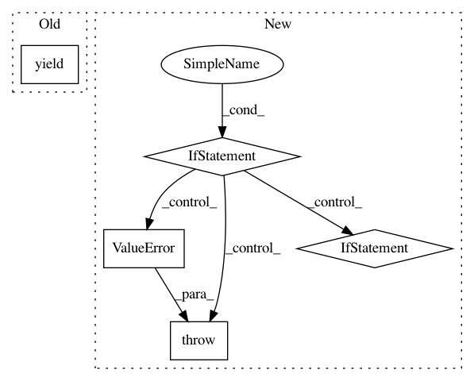

6a5d77c31e772cec5fedbf149f3d41108c5aae8c,tests/python/pants_test/engine/test_isolated_process.py,,javac_compile_process_result,#Any#,181
Before Change
raise ProcessExecutionFailure(
exit_code, stdout, stderr, "javac compilation")
yield JavacCompileResult()
def create_javac_compile_rules():
return [
After Change
def javac_compile_process_result(javac_compile_req):
java_files = javac_compile_req.javac_sources.java_files
for java_file in java_files:
if not java_file.endswith(".java"):
raise ValueError("Can only compile .java files but got {}".format(java_file))
sources_snapshot = yield Get(Snapshot, PathGlobs, PathGlobs(java_files, ()))
process_request = ExecuteProcessRequest.create_from_snapshot(
argv=javac_compile_req.argv_from_source_snapshot(sources_snapshot),
env=dict(),
snapshot=sources_snapshot,
output_files=tuple(java_file[:-5] + ".class" for java_file in java_files),
)
javac_proc_result = yield Get(ExecuteProcessResult, ExecuteProcessRequest, process_request)
In pattern: SUPERPATTERN
Frequency: 3
Non-data size: 5
Instances
Project Name: pantsbuild/pants
Commit Name: 6a5d77c31e772cec5fedbf149f3d41108c5aae8c
Time: 2018-05-16
Author: dawagner@gmail.com
File Name: tests/python/pants_test/engine/test_isolated_process.py
Class Name:
Method Name: javac_compile_process_result
Project Name: nilmtk/nilmtk
Commit Name: 59a4736028fea991396643e361d0488c7c96736d
Time: 2014-12-02
Author: jack-list@xlk.org.uk
File Name: nilmtk/elecmeter.py
Class Name: ElecMeter
Method Name: power_series
Project Name: HazyResearch/fonduer
Commit Name: 8946a24d7c1a21a80ccaf86418c354cf87e84bfa
Time: 2018-09-04
Author: lwhsiao@stanford.edu
File Name: src/fonduer/supervision/labeler.py
Class Name: LabelerUDF
Method Name: apply